Disciplinas
-
ESTRUTURA DE DADOS-T01-2024-1 Concluído
Materiais
Vídeo 1 - [UFMS Digital] Estrutura de Dados - Módulo 1 - Unidade 2. sendProf° ministrante: Dr. Jonathan de Andrade Silva.
Conteúdo
Conceitos e Definições.
Motivação
- Até agora vimos diferentes estruturas de dados com o objetivo de melhorar os custos de inserção, remoção ou busca de elementos em um conjunto;
- Seja com Array (vetor), Lista, Pilha, Fila e Tabela de dispersão.
- Mesmo se conseguirmos o menor custo para buscar um elemento no conjunto, esse custo se manteria caso quiséssemos o menor ou o maior elemento do conjunto?
- Não, precisaríamos ordenar o conjunto de dados, caro!
- Poderíamos então explorar a estrutura de dados Fila de prioridades.
- Permite organizar/ordenar os elementos do conjunto por meio de seus valores de prioridades (ou chaves).
- Imagine em um posto de saúde em que uma triagem é feita para realizar os atendimentos dos pacientes.
- A triagem determina uma prioridade ou chave (fita verde, amarela ou vermelha) para cada paciente;
- Os atendimentos realizam uma busca pelo paciente de maior prioridade de atendimento (fita vermelha, primeiro).
Heaps.
- Heap pode ser visto como uma estratégia para manter ordenado (mesmo após inserção ou remoção) os elementos em uma fila de prioridades “ordenado” com custo menor que O(N), onde N é o tamanho do conjunto;
- Podemos ter duas maneiras de ordenar as prioridades: do maior para o menor, ou vice e versa.
- Max-Heap: a prioridade está com os maiores valores.
- Min-Heap: a prioridade está com os menores valores.
- A ideia de organização dos elementos na Heap, envolve organizar os elementos em uma estrutura conhecida como árvore binária, ou alternativamente, heap binária (binary heap).
- Cada elemento é um nó dessa estrutura de dados;
- Porém, não são organizados (conectados) linearmente como é feito em uma lista ou fila linear.
- A organização segue um padrão de árvore binária em que um elemento A pode estar conectado a mais dois outros elementos desde que ambos sejam menores ou maiores que A.
Heap Binária vs Fila Ligada.
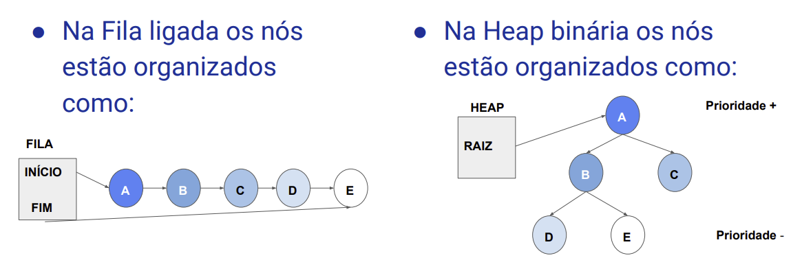Árvore Binária (definições).
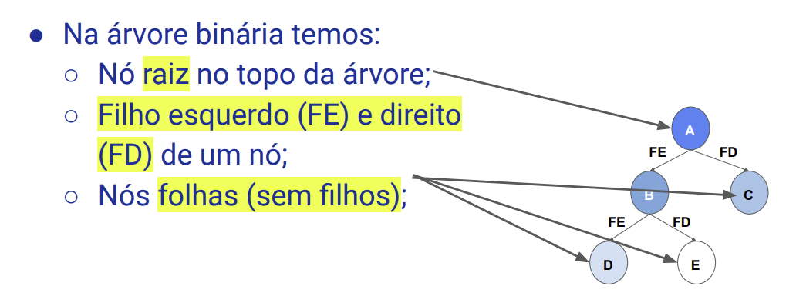 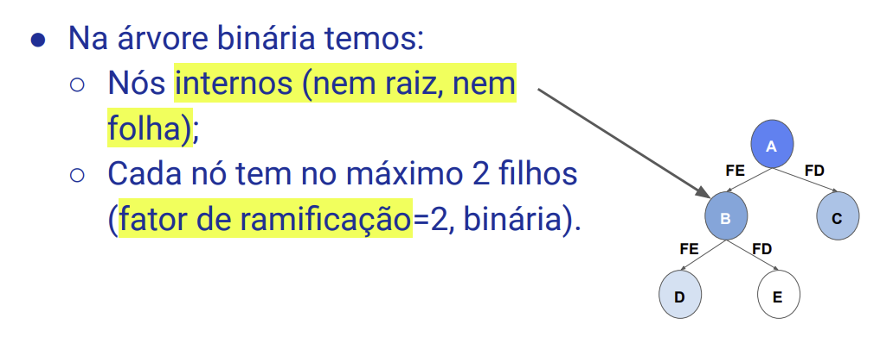Heap Binária (Array/Vetor).
- Podemos também representar essa árvore binária quase completa por meio de vetor/array, mas por que?
- Lembra da Hash? Acesso direto, O(1);
Um nó na posição i do vetor tem filhos nas posições FE=2*i+1 e FD=2*i + 2 e ancestral em (i-1)/2; Veja para o nó B, i=1.
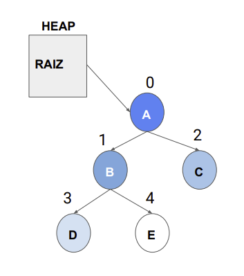- Agora que sabemos como encontrar os elementos da árvore no vetor, temos que definir algumas restrições de ordem:
- Prioridade do nó ancestral é ≥ que dos filhos (Max-Heap); 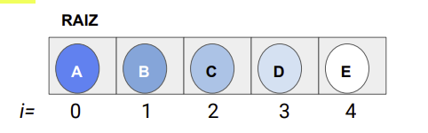
- Prioridade do nó ancestral é ≤ que dos filhos (Min-Heap); 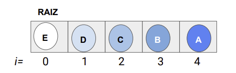
Analise os 2 vetores abaixo e veja qual respeita as propriedades da Heap:
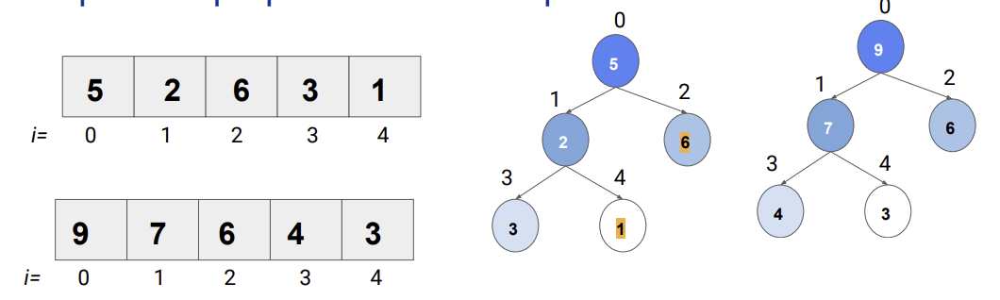- Quem é o pai de 6?
- anc(6) = (2-1)/2 = 1/2 = 0; H[0] = 9.
- Quem é o filho esquerdo de 6?
- FE(6) = 2*2+1 = 5; Não tem H[5]!
- Quem é o filho direito de 9?
- FD(9) = 2*0+2 = 2; H[2]=6.
Fórmula:
anc(i) = ⎣(i-1)/2⎦;
FE(i) = 2*i+1;
FD(i) = 2*i+2;
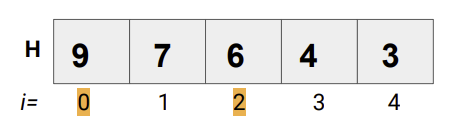
Heap Binária (Operações):
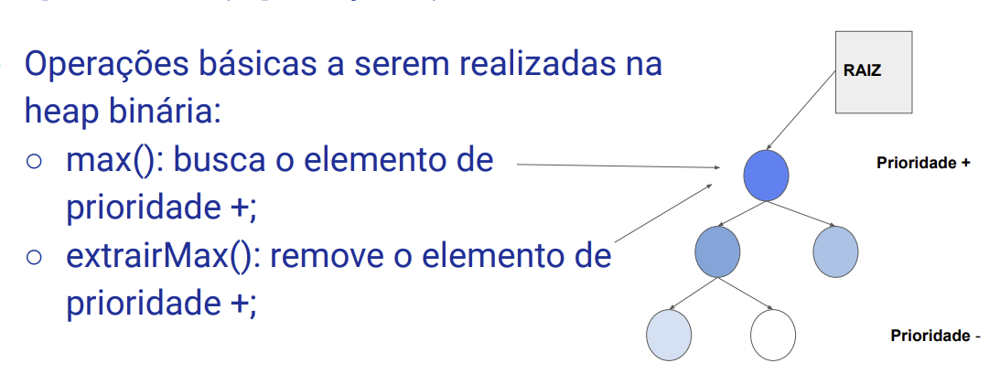
- Operações básicas a serem realizadas na heap binária:
- max(), extrairMax();
- inserir(x,p): insere um elemento x com prioridade p;
- Qual dessas operações é a mais trivial?
- Inserção na Max-Heap.
- Iniciando com a Heap vazia, inserimos primeiro valor na raiz (posição 0);
- Os demais serão inseridos no fim do vetor e verificando as violações até a raiz;
- Inserção na Max-Heap.
- Iniciando com a Heap vazia, inserimos o primeiro valor na raiz (posição 0);
- Os demais serão inseridos no fim do vetor e verificando as violações até a raiz;
anc(2) = (2-1)/2 = 0
H[0] > H[2] ? Não
trocar(H[2],H[0])
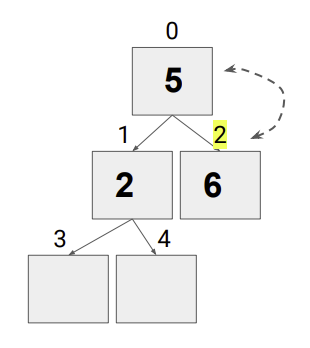
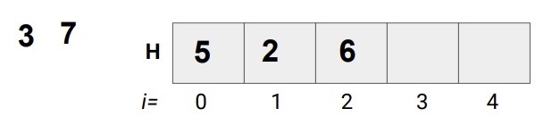
anc(3) = (3-1)/2 = 1
H[1] > H[3] ? Não
trocar(H[3],H[1])
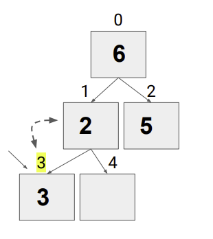
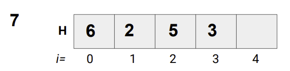
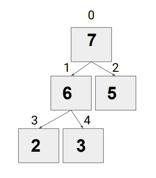
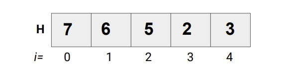
Inserir(H, novo):
T = tamanho(H)
SE FIM < T Então
H[FIM] = novo
VerificarInsercao(H,FIM)
FIM = FIM+1
Senão
“MaxHeap Cheia!”
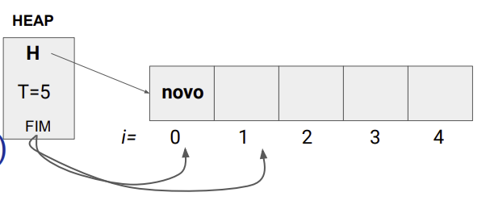
VerificarInsercao(H, i):
j = anc(i) = ⎣(i-1)/2⎦
Se i > 0 Então
Se H[i] > H[j] Então
trocar(H[i],H[j])
VerificarInsercao(H,j)
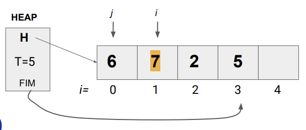
- Inserção na Max-Heap.
- Inserir em uma posição no vetor H tem custo O(1);
- Verificar violações até a raiz tem custo proporcional a altura da árvore.
- Uma heap binária com N nós tem ⎣log2 (N)⎦+1 níveis.
- Logo o custo da inserção é O(log2 (N)).
- ExtrairMax ou Remoção na Max-Heap.
- Retirar o elemento máximo da raiz;
- Preencher o espaço vazio na raiz (posição 0) com o último elemento do vetor.
- Verificando da raiz até as folhas as violações:
- O maior entre: ancestral, FE e FD e trocar pelo ancestral;
- Descer a árvore na direção do maior elemento trocado.
FE(1)=(2*1+1)=3
FD(1)=(2*1+2)=4
maior(H[FE],H[FD])=2
H[1] > 2 ? Sim
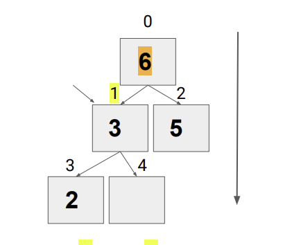
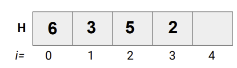
ExtrairMax(H):
rem = H[0]
H[0] = H[FIM-1]
FIM = FIM-1
VerificarRemocao(H,0)
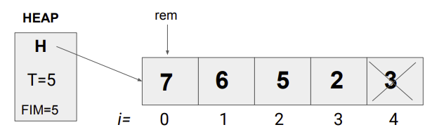
VerificarRemocao(H,i): EncMaior(H,i,fe,fd):
fe = esq(i), fd = fe+1 Se fe H[i] Então
pMaior = EncMaior(H,i,fe,fd) pMaior=fe
Se pMaior ≠ i Então Senão pMaior=i
trocar(H[i], H[pMaior]) Se fd
VerificarRemocao(H, pMaior) H[pMaior] Então
pMaior=fd
retornar pMaior
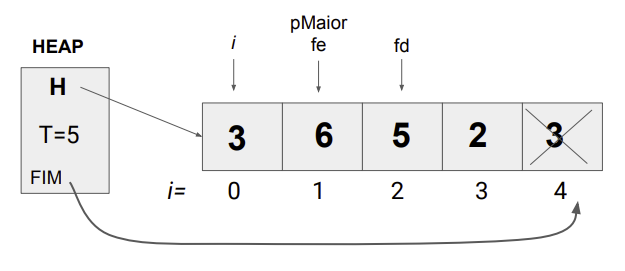
- ExtrairMax ou Remoção na Max-Heap.
- Custo de retirar o maior elemento na raiz é O(1);
- Porém, descer a árvore e ir verificando as violações depende do número de níveis da árvore (como na inserção);
- Portanto, o custo da remoção de um elemento é O(log2 (N)).
Referências.
- SZWARCFITER, Jayme Luiz; MARKENZON, Lilian. Estruturas de dados e seus algoritmos. 3. ed. Rio de Janeiro, RJ: LTC, 2010. ISBN 9788521629955.
- CORMEN, Thomas. Algoritmos: teoria e prática. Rio de Janeiro: GEN LTC, 2013. ISBN 9788595158092.